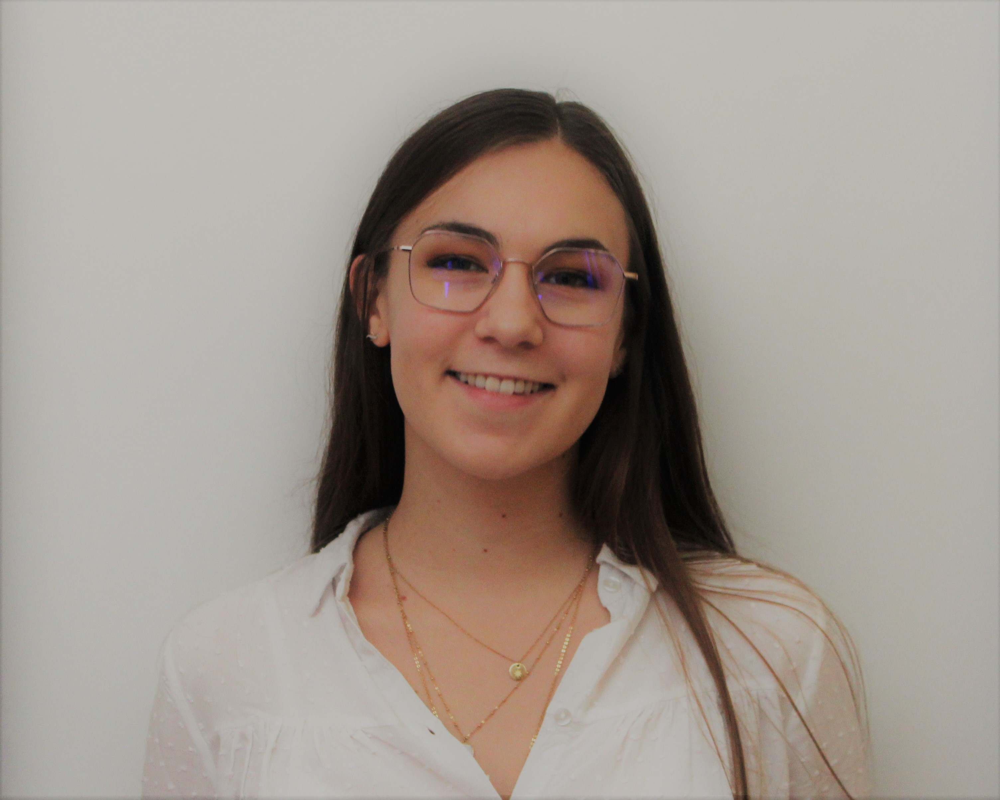

Hi, I'm Marie 🌞
I'm looking for new opportunities and adventures
Let me introduce myself : I'm Marie, a 21-year old Digital Marketing student at IESEG School of Managemement in Lille. I am from Angers, a nice town in the West of France. Since childhood, I have always been active and passionate. It started at 8, when I won a regional cooking contest in the kitchens of a starred restaurant. Then I created a gymnastics club in my college, raised funds for the association Imagime for Margo in my high school, donated my hair for women suffering from cancer and integrated my Business school Junior-Entreprise as a project Manager. Last summer, I have finally been recruited at the Head of the Training Department at the French National Confederetation of Junior-Entreprises. As you can imagine, engagement is very important for me.
For my second year of Master, I am willing to take a new challenge : support a company for 6 moths through a Consulting project.
My Consulting Project with you 🍀
As my school describes it, a Consulting project is the opportunity :
- for a company to gather an innovative and external view on its activities
- for a student to perform a deep and rich analysis of a company's activities to get prepared to tomorrow professional challenges
As I am aware of the different issues our world is facing, I am willing to perform my Consulting project in a firm that makes efforts to adapt its business model to sustainability in a sector full of challenges : the agri-food.
To learn more about Consulting projects, you can click on here :
Agri food and retail interests 🏭
It is important for me to work in a sector people depend on. What is best than the sector that makes the entire population live everyday ? At the centre of our society, agri-food is essential to our lives. The sector is also facing many issues such as climate change and soaring demography.

To discover the agri-food and the retail industries, I have realised an 6 month internship at Unilever last summer. As the Vendée sales representative for Unilever products on the Food category, my missions were to :
- visit everyday my portfolio composed of 50 large and medium-sized stores
- ensure the visibility of Unilever products by negociating with the store Managers
- organise promotions to boost Unilever sales and educate consumers
- help and support the stores Managers
My Junior-Entrepreneur experience 🎯
Confédération Nationale des Junior-Entreprises

The French National Confederation of Junior-Entreprises manages and federates the 200 French Junior-Entreprises. Its role is to support the different structures, ensure the development of the J.E. Movement, provide Junior-Entrepreneurs a fullfiling and complete experience and finally organise meetings between its partners : BNP Paribas, Alten, EY, Engie, St Gobain, Le Sphinx and more, and the 25 000 Junior-Entrepreneurs to create strong links.
As the Training Manager, my missions are to :
- Manage and develop the Training offer
- Ensure the development of new resources
- Organise Training Congress
- Support the other Departments in developing the Junior-Entreprises
- Participate in global projects
- audit and control every structure of the Movement
- Provide Business Developpement trainings
IESEG CONSEIL Lille

IÉSEG CONSEIL Lille, the IESEG School of Management Junior-Entreprise, aims to provide innovative solutions to all types of companies as large group to entrepreneurs and SMEs on Marketing, Communication, Finance and HR issues. Each year, more than 30 studies are carried out and enable professionals to develop part of their business, launch a project or even organise their recruitment.
As a project Manager, my missions were to :
- Realization of commercial monitoring
- Physical and offline prospecting
- Organization and management of LinkedIn prospection
- Clients support in the definition of their problems
- Realization of commercial proposals
My studies 👩🎓
After a French social and economic baccalauréat obtained with the highest honours, I have decided to join IESEG.

IESEG
Considered as the 32nd best Master in Management at the international level, IÉSEG has established itself as the first post-baccalauréat Business School in France. The diversity of the courses taught, the quality of the faculty and the associative life allow students to arm themselves with the best tools to transform tomorrow's world. I am currently pursuing a Digital Marketing Master to acquire strong Data Analysis and Marketing skills, with the objective to evolve in the Marketing - Sales environment.
BINUS University
BINUS University, in Jakarta, Indonesia, offers rich and diverse International programs to students from all over the world. I had the great opportunity to humbly discover the rich Indonesian culture thanks to an online exchange semester in 2020.